Our lab activity this week is to create automation scripts using the Selenium tool. To do this, we will create a dozen tests on a web-based calculator.
Calculator
We will automate the functionality of "The Online Calculator™." This can be found here: https://www.theonlinecalculator.com/.
Please familiarize yourself with this calculator for a few minutes. It would be a good idea to view the source of the calculator, which can be done in the following ways:
Google Chrome, Firefox, and Edge – Right-click anywhere on the page and select “View Page Source.” To view individual elements, right-click them and choose “Inspect.”
Get Set Up with Katalon
An example of a test case is:
CSE270M06TeachAutomation.krecorder
Download this file so you can load it into Katalon.
Google Chrome and Microsoft Edge
Open Katalon IDE Project
Click on the Katalon icon in your extensions
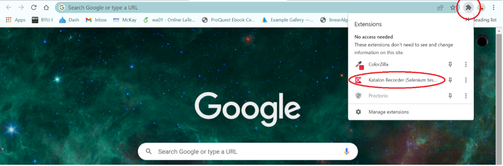
It will then bring up the Katalon IDE.
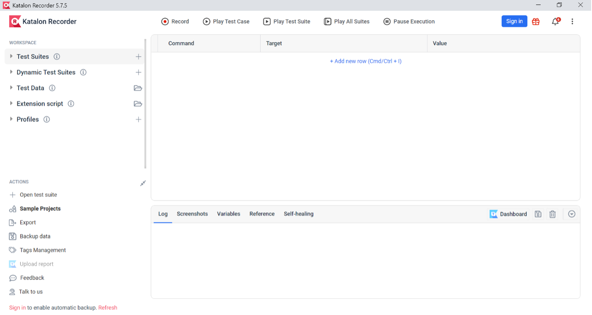
Click “Open test suite” , either from Open Test Suites or from the "folder icon"
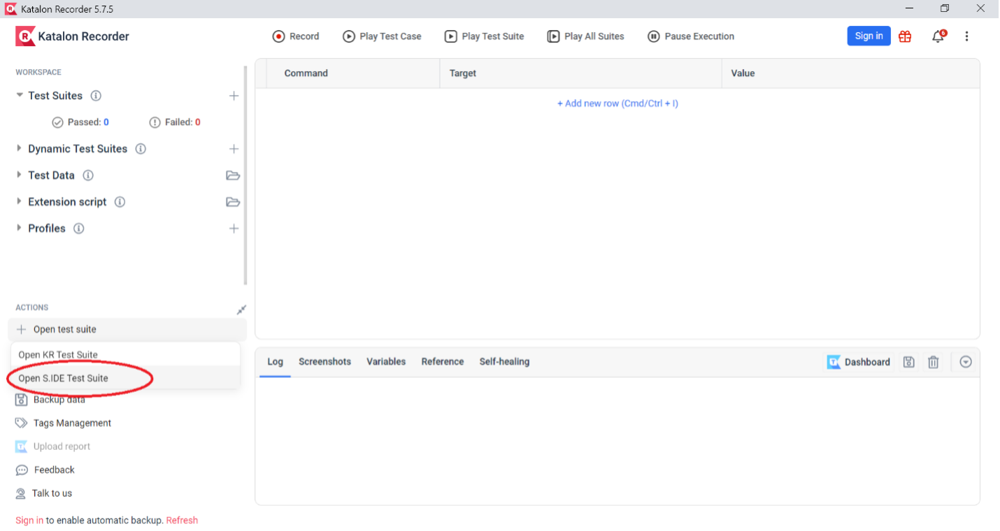
Click “Open S.IDE Test Suite”
Navigate to the location of automation file that you saved, and select the file “CSE270M06TeachAutomation.krecorder” Select “Got it!” to finish loading the file.
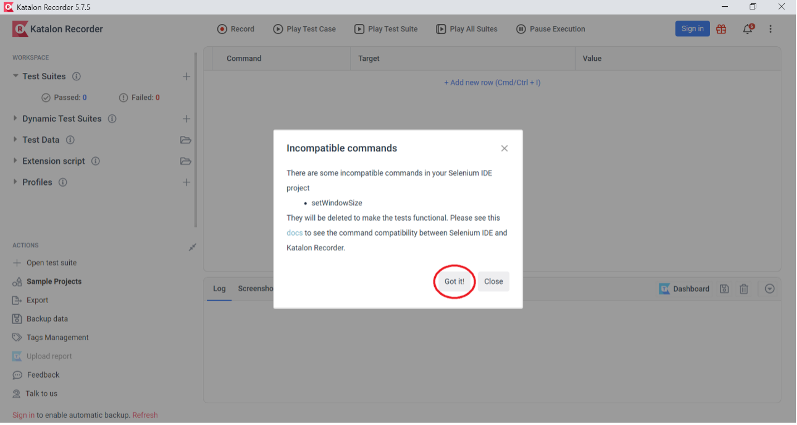
You should see the following tests within the Katalon IDE:
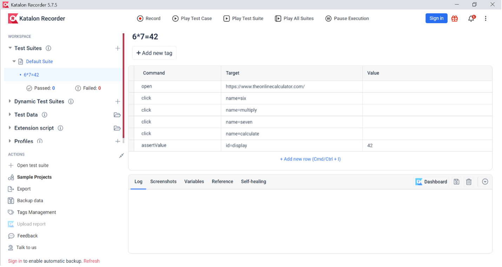
Run Test
Select the test case that you just loaded into the IDE, and then select “Play Test Case.”
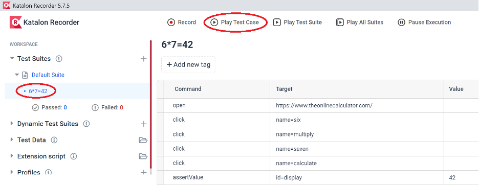
Creating a Test
This automation was created using the following steps:
- Click on your browser’s icon for the Katalon plug in.
- While hovering over your test suite, select the icon to create a new test case.
- If there are no suites under the “Test Suites” tab, you can create a suite by hovering over “Test Suites” and choosing the icon. After doing this you can follow the instruction above.
- You are then given the option to name your test. For this example, choose the name: What is 6*7? 42.
- At any time, you can save your test to your local machine by hovering over your suite and clicking the icon. You can then choose to download the Test Suite.
- After making sure that the new test case you made is selected, click on the icon. This will add a new row to the test case, and needs to be done every time you create a new command.
- First, you will want to tell the test case to open the online calculator’s website.
- For command, type “open”
- For target, type “https://www.theonlinecalculator.com/”
- Leave the value field blank.
- Next, you will want to enter the value 6 into the calculator.
- For command, type “click”
- For target, type “name=six”
- Note that the names of each calculator object can be found by “inspecting” them within your browser.
- Leave the value field blank.
- You will want to specify multiplication.
- Create another click command.
- This time the name of your target is “multiply”
- Leave the value field blank.
- Enter the value 7 into the calculator.
- Create another click command.
- The name of your target is “seven”
- Leave the value field blank
- Finish the calculation
- Create another click command.
- The name of your target is “calculate”
- Leave the value field blank
- Create a verification (assert) step to confirm that the webpage is working correctly
- For command, type “assertValue”
- For target, type “id=display”
- For value, type “42”
- Verify that the test works by pressing the “Play Test Case” button ▶ at the top of the page.
- Save your test suite.
Mozilla Firefox
Open Katalon IDE Project
Click on the Katalon icon in your extensions
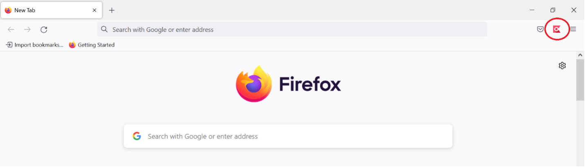
It will then bring up the Katalon IDE
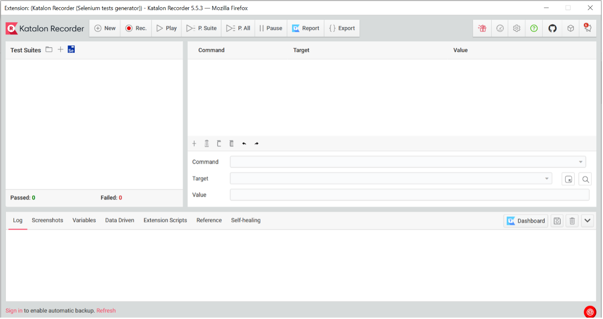
Click “Import Selenium Test Suite”
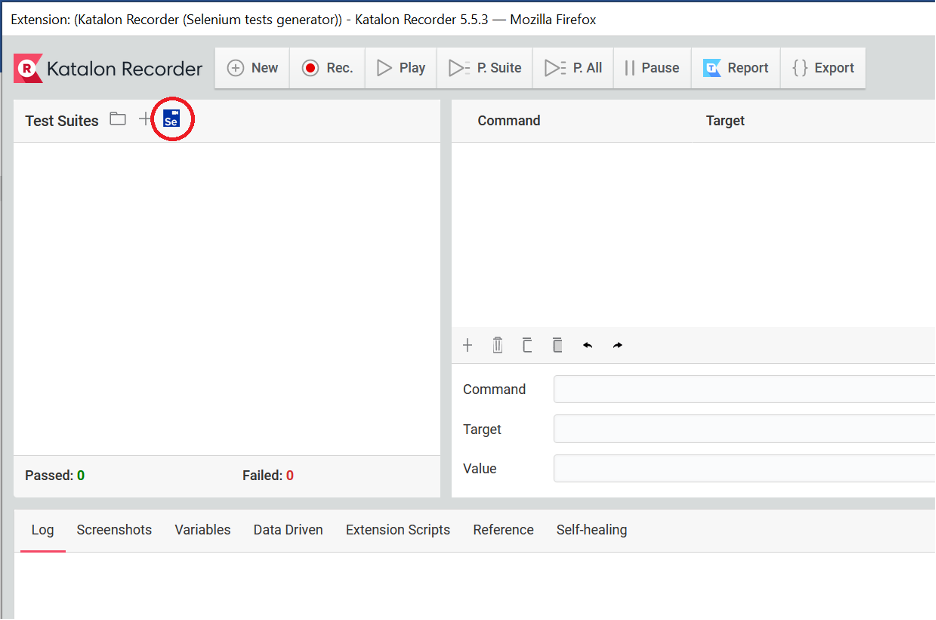
Navigate to the location of automation file that you saved, and select the file “CSE270M06TeachAutomation.side.” Select “Got it!” to finish loading the file.
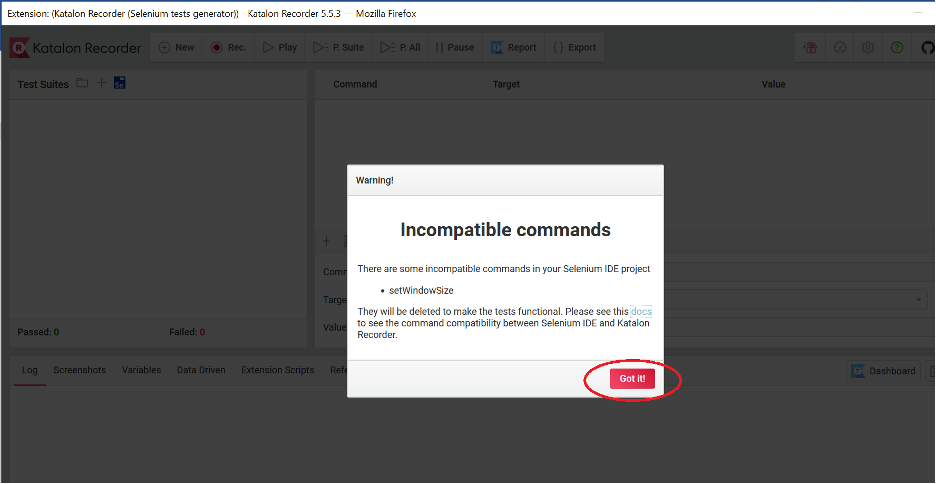
You should see the following tests within the Katalon IDE:
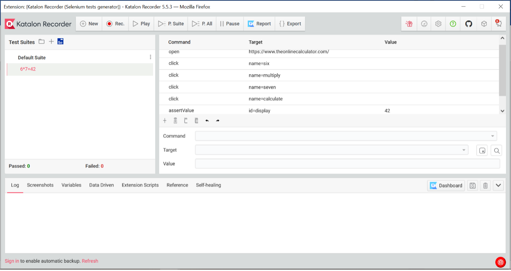
Run Test
Select the test case that you just loaded into the IDE, and then select “Play”
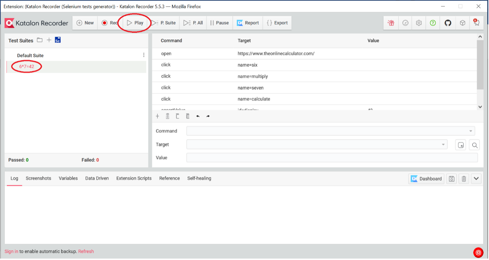
Creating a Test
This automation was created using the following steps:
- Click on your browser’s icon for the Katalon plug in.
- While hovering over your test suite, select the icon and select “Add New Test Case.”
- If there are no suites under “Test Suites,” you can create a suite by clicking the icon in the Test Suites header. After doing this you can follow the instruction above.
- You are then given the option to name your test. For this example, choose the name: What is 6*7? 42.
- At any time, you can save your test to your local machine by hovering over your suite and clicking the icon. You can then choose to save the test suite to your computer.
- Before proceeding, make sure that you have selected your new test case. Then, create a new command by using the
 icon near the center of the window. Note that you will need to create and then select a new command for every step of this test case.
icon near the center of the window. Note that you will need to create and then select a new command for every step of this test case. - First select the blank command you made, and then tell it to open the online calculator’s website.
- For command, type “open”
- For target, type “https://www.theonlinecalculator.com/”
- Leave the value field blank.
- Next, you will want to enter the value 6 into the calculator.
- For command, type “click”
- For target, type “name=six”
- Note that the names of each calculator object can be found by “inspecting” them within your browser.
- Leave the value field blank.
- You will want to specify multiplication.
- Create another click command.
- This time the name of your target is “multiply”
- Leave the value field blank.
- Enter the value 7 into the calculator.
- Create another click command.
- The name of your target is “seven”
- Leave the value field blank
- Finish the calculation
- Create another click command.
- The name of your target is “calculate”
- Leave the value field blank
- Create a verification (assert) step to confirm that the webpage is working correctly
- For command, type “assertValue”
- For target, type “id=display”
- For value, type “42”
- Verify that the test works by pressing the “Play” button ▶ at the top of the page.
- Save your test suite.
Create Test Cases
With your partner(s), generate a dozen test cases. This will involve using Katalon to create twelve individual test cases.
Try to verify some of the following:
- The calculator shall add two numbers
- The calculator shall subtract two numbers
- The calculator shall multiple two numbers
- The calculator shall divide two numbers
- The calculator shall represent pi.
- The calculator shall clear previous entries
- The calculator shall square root a number with one operation
- The calculator shall square a number with one operation
- The calculator shall convert a number to a percent with one operation
- The calculator shall round a decimal number to two decimal places
- The calculator shall round a decimal number to zero decimal places
- The calculator shall store an answer in memory
- The calculator shall add a number to stored memory
- The calculator shall subtract a number from stored memory
- The calculator shall clear stored memory
- The calculator shall (add, sub, multi, div) sequence of numbers (x4 requirements)
- The calculator shall display commas to separated numbers.
- The calculator shall display negative numbers
- The calculator shall display scientific notation for large numbers.
- The calculator shall display 19-number of digits properly on the screen
- The calculator shall display x-number of digits before switching to scientific notation.
- The calculator shall (add, sub, multi, div) the same number sequentially (i.e. x += 2
- The calculator shall (add, sub, multi, div) complex equation using order of operation.
- The calculator shall display x-number of digits properly on the screen
- The calculator shall display x-number of digits before switching to scientific notation.
Come up with at least 2 of your own.
Challenge: Write tests cases that fail but are successful because the test cases are checking for failure.
Submission
Submit a screen-shot of each of your test cases in Katalon with a successful run. Show that the tests ran successfully in the screen shot. Save the pictures in a word document or presentation.
Assessment
This is a pass/fail assignment.